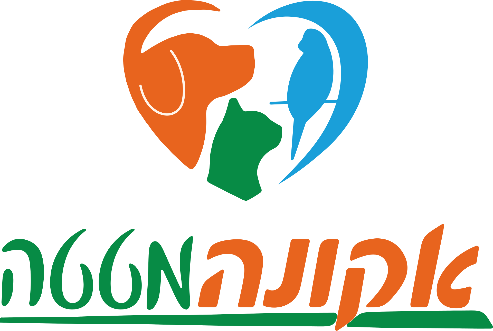

הכלב שלך
מפרק את הבית?
3 סימנים שהוא משועמם ↓
1
נובח על כל עלה שזז
2
גרביים נעלמות. רק השמאליות.
3
רודף אחרי הזנב. ותופס.
הפתרון: 10 דקות משחק חשיבה ביום.
צעצועי לעיסה וחידות מחכים בחנות

ויצמן 24, נתניה ·
052-5284448